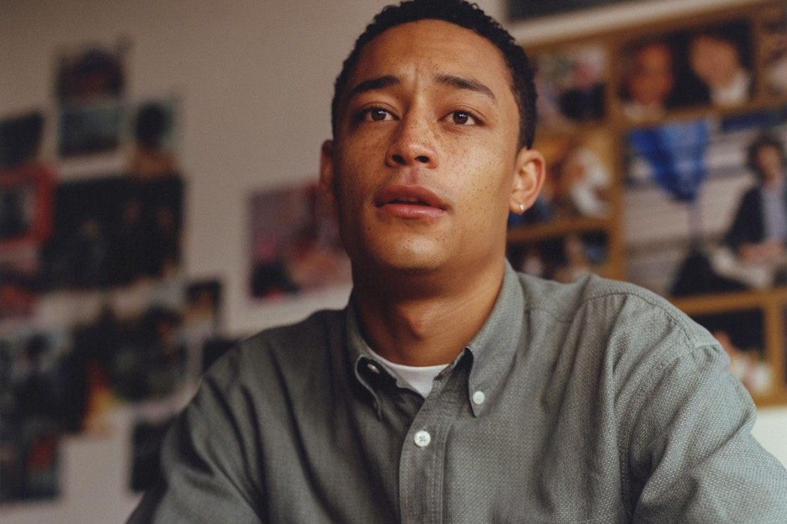

<!DOCTYPE html>
<html lang="eng"></html>
<html>
  <head>
    <meta charset="utf-8" />
    <title>Project 2: Noemi's Music Magazine</title>
    <link rel="stylesheet" href="../code/style.css"/>
    <meta name="viewport" content="width=device-width, initial-scale=1">
    <link rel="preconnect" href="https://fonts.gstatic.com">
    <link href="https://fonts.googleapis.com/css2?family=Abril+Fatface&family=Amiri&display=swap" rel="stylesheet">
  </head>

  <body>
    <div class="header"> <!-- Some kind of logo and navbar -->  
      <h1>Noemi's Music Magazine  </h1>
    </div>
      <nav>
        <ul>
          <div><li><a href="../code/index.html">Home</a></li></div>
          <div><li>Concerts</li></div>
          <div><li>Events</li></div>
          <div><li>About</li></div>
        </ul>
      </nav>
    </header>


<h3>Loyle Carner</h3>
<p class="author">by Noemi, 01.01.2021</p>
<p>Loyle Carner has shared a new song "Yesterday." The track is produced by Madlib and is the British rapper's first release since 2019 album Not Waving, But Drowning.
    “It’s no secret Madlib is my musical hero,” Carner said in a statement. “I wrote this almost 2 years ago, but at first had trouble with clearing the sample and 
    thought it would never see the light of day. It’s really just about what it is to be black and white, in a world where you pretty much have to be one or the other. 
    It hurts the way I felt about my race back then, is the same way I feel now. Nothing has changed since my last entry, nothing has changed since the last century. 
    I hope that soon this song is nothing more than a reminder of a different time, and collectively we’re able to move forward to a time of more respect, acceptance and understanding.”</p>
</body>
</html>